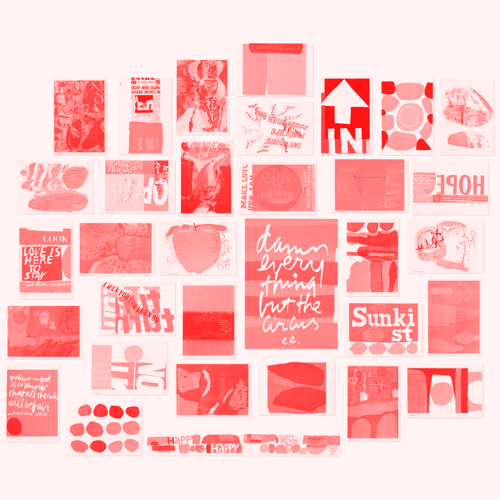

RULE 1
Find a place you trust, and then try trusting it for awhile.

RULE 2
General duties of a student — pull everything out of your teacher;
pull everything out of your fellow students.
RULE 3
General duties of a teacher — pull everything out of your students.
RULE 4
Consider everything an experiment.
RULE 5
Be self-disciplined — this means finding someone wise or smart and
choosing to follow them. To be disciplined is to follow in a good way.
To be self-disciplined is to follow in a better way.
RULE 6
Nothing is a mistake. There’s no win and no fail, there’s only make.
RULE 7
The only rule is work. If you work it will lead to something. It’s the
people who do all of the work all of the time who eventually catch on
to things.
RULE 9
Be happy whenever you can manage it. Enjoy yourself. It’s lighter than
you think.
RULE 10
“We’re breaking all the rules. Even our own rules. And how do we do
that? By leaving plenty of room for X quantities.” (John Cage)
HINTS:
Always be around. Come or go to everything. Always go to classes. Read
anything you can get your hands on. Look at movies carefully, often.
Save everything — it might come in handy later.”